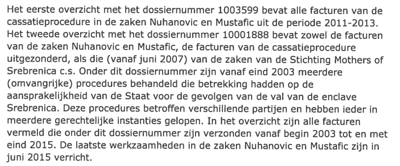
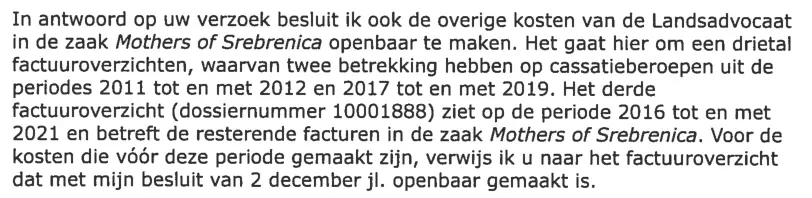

Prueba · Carta
Ministerio de Defensa, resoluciones Wob sobre los gastos del landsadvocaat, 2 de diciembre de 2021 y 5 de enero de 2022
De la resolución del 2 de diciembre de 2021
«La segunda relación, con el número de expediente 10001888, contiene tanto las facturas de los asuntos Nuhanovic y Mustafic, con excepción de las facturas del procedimiento de casación, como las (a partir de junio de 2007) de los asuntos de la Fundación Mothers of Srebrenica y otros. Con este número de expediente se han tramitado desde finales de 2003 varios procedimientos (de gran envergadura) relativos a la responsabilidad del Estado por las consecuencias de la caída del enclave de Srebrenica». Página 1, tercer párrafo. Las líneas se han unido aquí. Traducido del neerlandés; el texto original figura a continuación.
“Het tweede overzicht met het dossiernummer 10001888 bevat zowel de facturen van de zaken Nuhanovic en Mustafic, de facturen van de cassatieprocedure uitgezonderd, als die (vanaf juni 2007) van de zaken van de Stichting Mothers of Srebrenica c.s. Onder dit dossiernummer zijn vanaf eind 2003 meerdere (omvangrijke) procedures behandeld die betrekking hadden op de aansprakelijkheid van de Staat voor de gevolgen van de val van de enclave Srebrenica.” Texto original

De la resolución del 5 de enero de 2022
«En respuesta a su solicitud, resuelvo hacer públicos también los demás gastos del landsadvocaat en el asunto Mothers of Srebrenica. Se trata de tres relaciones de facturas, dos de las cuales se refieren a recursos de casación de los períodos de 2011 a 2012, ambos inclusive, y de 2017 a 2019, ambos inclusive. La tercera relación de facturas (número de expediente 10001888) abarca el período de 2016 a 2021, ambos inclusive, y se refiere a las facturas restantes en el asunto Mothers of Srebrenica». Página 9 del PDF, tercer párrafo. Las líneas se han unido aquí. Traducido del neerlandés; el texto original figura a continuación.
“In antwoord op uw verzoek besluit ik ook de overige kosten van de Landsadvocaat in de zaak Mothers of Srebrenica openbaar te maken. Het gaat hier om een drietal factuuroverzichten, waarvan twee betrekking hebben op cassatieberoepen uit de periodes 2011 tot en met 2012 en 2017 tot en met 2019. Het derde factuuroverzicht (dossiernummer 10001888) ziet op de periode 2016 tot en met 2021 en betreft de resterende facturen in de zaak Mothers of Srebrenica.” Texto original

Por qué importa este documento
El 2 de diciembre de 2021 y el 5 de enero de 2022, el Ministerio de Defensa hizo públicas, a petición de Giltay, cinco relaciones de facturas del landsadvocaat, un bufete privado que representa al Estado, relativas a los asuntos de Nuhanović y Mustafić y a los de la Fundación Mothers of Srebrenica. Los totales finales, IVA incluido, son de 289 555,13 euros (casación Nuhanović y Mustafić, 2011–2013), 1 839 041,87 euros (el expediente principal, 2003–2015), 39 415,27 euros y 131 390,65 euros (casación en el asunto de las Madres, 2011–2012 y 2017–2019) y 327 218,35 euros (el expediente principal, 2016–2021). En conjunto suman 2 626 621,27 euros. Esa suma no figura en las resoluciones; el ensayo habla de más de 2,6 millones de euros entre 2003 y 2021. Balkan Insight informó sobre los importes el 21 de enero de 2022.
Procedencia
- Documento
- Dos resoluciones sobre solicitudes basadas en la Wet openbaarheid van bestuur (Wob), la antigua Ley de Publicidad de la Administración, con cinco relaciones de facturas como anexos
- Remitente
- Ministerio de Defensa, Administración central (Bestuursstaf), Dirección de Comunicación, La Haya
- Destinatario
- E. Giltay (2 de diciembre de 2021) y E.F. Giltay (5 de enero de 2022)
- Fecha
- 2 de diciembre de 2021, estampada con sello, y 5 de enero de 2022, escrita a mano
- Referencia
- BS2021025638 y BS2021028374
- Asunto
- «Besluit op uw Wob-verzoek» (resolución sobre su solicitud Wob)
- Referencias
- Las solicitudes Wob de Giltay del 8 de octubre y del 8 de diciembre de 2021
- Firmado
- En nombre del ministro de Defensa, la secretaria general, G.E.A. van Craaikamp
- Anexos
- Cinco relaciones de facturas del landsadvocaat
- Idioma
- Neerlandés
- Páginas
- 12
- Tachado
- Las firmas y los nombres y datos de contacto de las personas de contacto
- Fuente
- dedoofpotgeneraal.
nl/ doc/ landsadvocaat.pdf - Véase también
- Balkan Insight sobre los 2,6 millones de euros que gastó el Estado neerlandés, 21 de enero de 2022
Citado en: el ensayo «La prohibición cayó, el libro quedó en pie» en el capítulo (12) «No queda otra opción».
Ficha de prueba: https://
Documento: https://
Modificado por última vez el 10 de octubre de 2026, consultado el 27 de noviembre de 2026.

Esta página es una ficha de prueba del libro El general del encubrimiento de Edwin Giltay y del sitio web que lo acompaña.